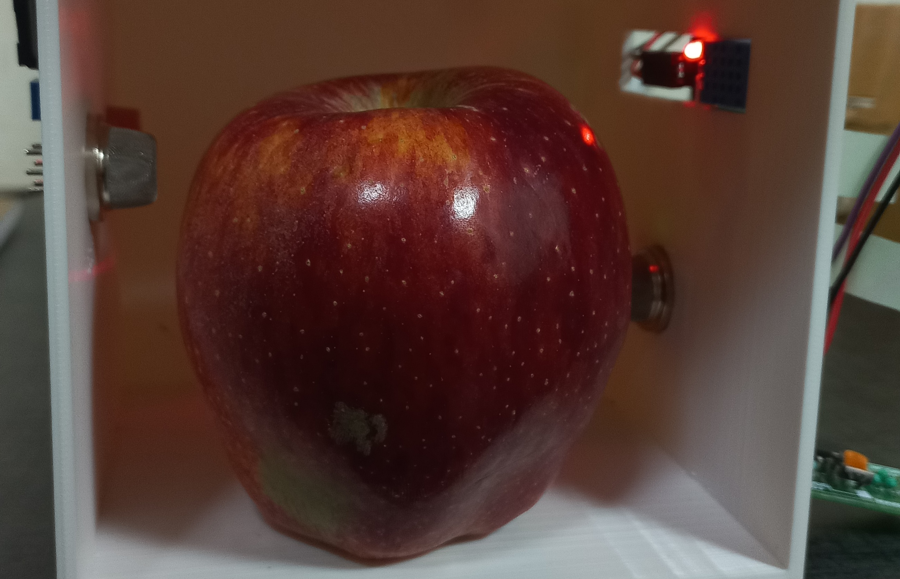
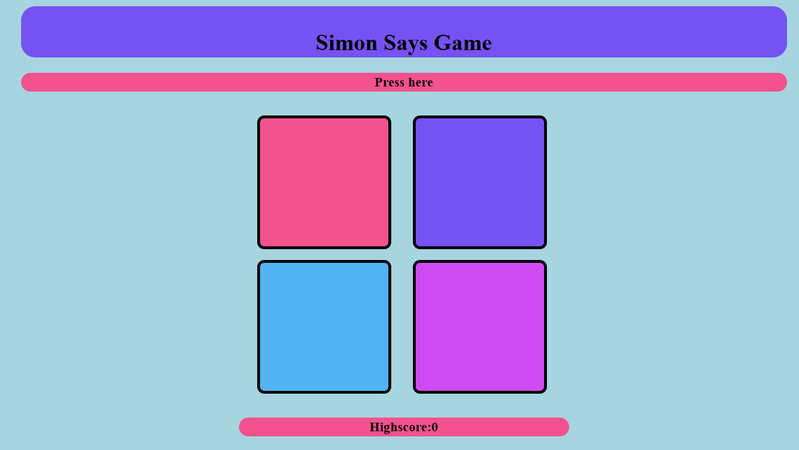

Non-destructively Fruit spoilage detection
has completed the internship at IIT KANPUR utilized an Arduino Uno, gas sensors, and a multispectral sensor, along with C++ code in the Arduino IDE.
Frontend Development Project: Spotify Clone
Designed and implemented a fully functional Spotify clone frontend, showcasing proficiency in frontend development and user interface design

Simon Says Game
Designed and implemented a fully functional Simon Says Game, showcasing proficiency in HTML, CSS and JavaScript.